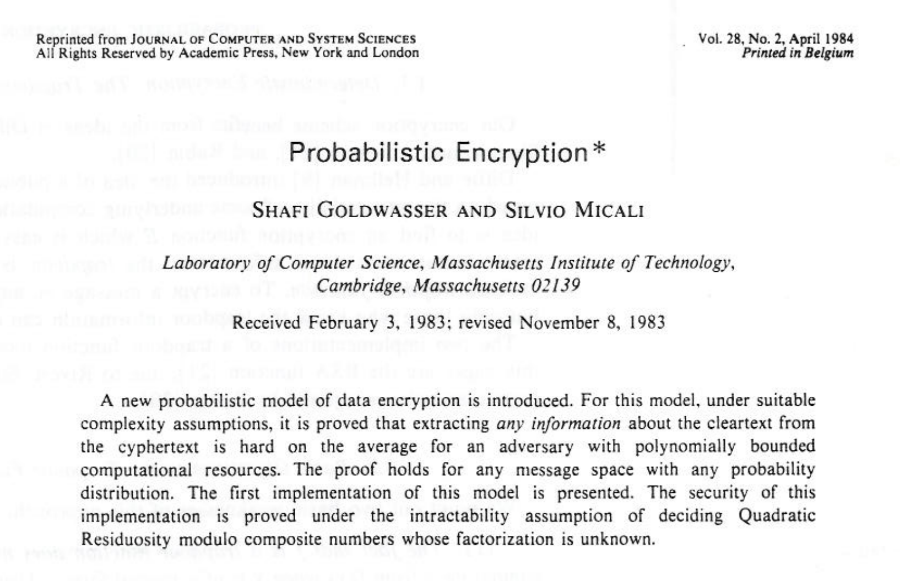
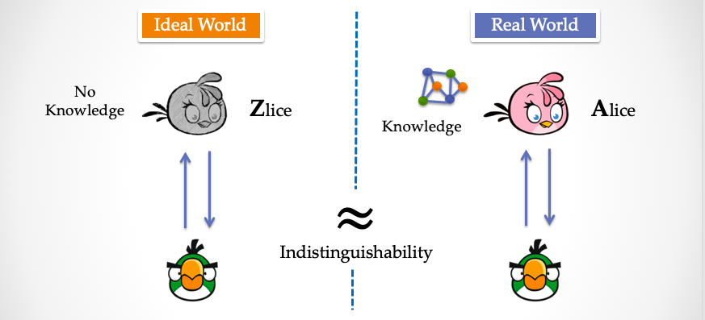
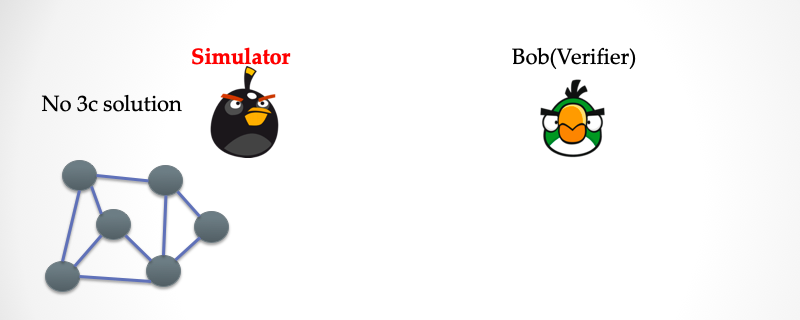
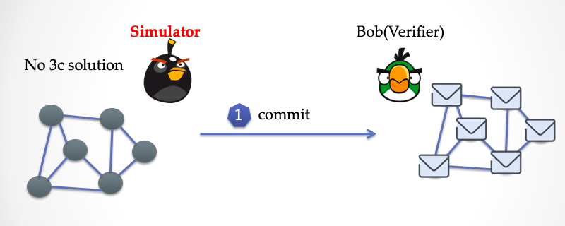
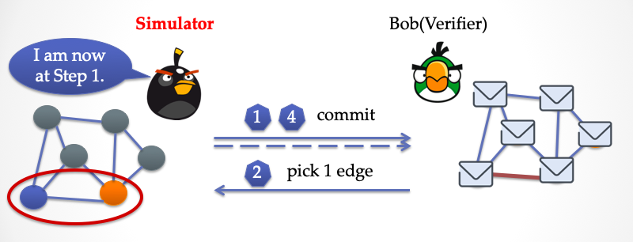
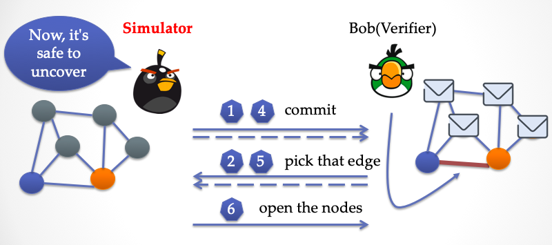
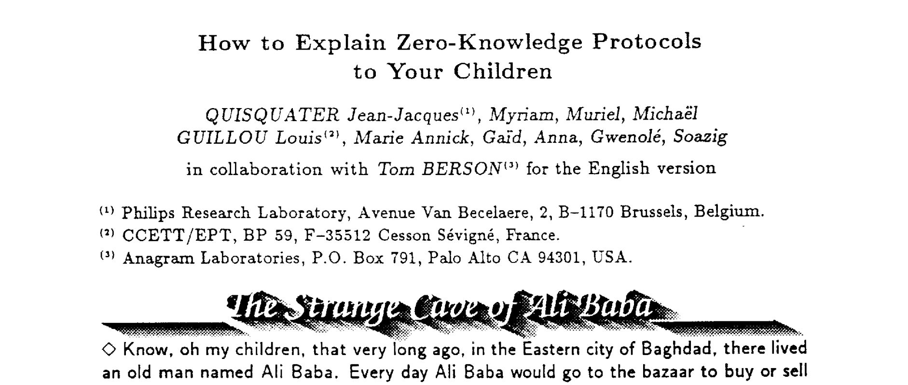

理解「模拟」
探索零知识证明系列（二）
I know that I know nothing —— 苏格拉底
相信很多人都听说过零知识证明，但是只有极少数人听说过模拟，然而模拟是理解零知识的关键。
我们在第一篇文章『初识「零知识」与「证明」』（链接）[1]中介绍了一个简单的零知识交互系统：地图三染色问题。那么这个系统真的是零知识的吗？我们为什么要相信这个结论呢？有证明吗？在 Alice 与 Bob 的对话过程中，如果不零知识，Alice就被坑了。交互式系统的设计者「我」需要让 Alice 确信，这个对话确实是零知识的。
如果从直觉主义角度解释，要证明一个交互系统中存在信息泄露，那么你只需要指证：第几个 bit 导致信息泄露即可；但如果要证明不存在信息泄露，那么你要对着所有信息流中的所有 bit 说，这从1，2，3，4，5，…… 编号的 bit 都没泄露任何信息。看官们，这是不是很难？
本文约八千字，略微烧脑。
安全的定义与不可区分性
首先，一个交互式系统，也就是一个对话，它的「零知识」需要证明。毕竟，现代密码学是建立在严格的形式化系统之上。在证明之前，还需要明确「安全假设」到底有哪些。所谓安全假设，比如我们说一个系统的权限隔离做得无比精确，每一个用户只能看到被授权的信息，但是这基于一个安全假设：管理员账号没有被破解。又比如在手机银行软件里，只能通过短信认证码，才能完成转账功能，这也基于一个安全假设：你的手机 SIM 卡没有被克隆。如果我们深入地分析每一个我们感觉安全的系统，都存在大量的似乎不那么稳固的安全假设。比特币私钥安全吗？比特币账户的安全假设也不少：首先你的助记词不能让别人知道，手机钱包里私钥保存加密算法足够强，密钥派生算法正规，你不能忘记助记词，等等等。
脱离安全假设来谈安全都是在耍流氓。一切安全都有前提的。只有经过数学证明之后，大家才能够确信这个 算法/方案 的安全性基于一些非常明确的「安全假设」。
在证明之前，还缺少一个东西，那就是「安全定义」。在多数人的认知系统中，安全就是一个框，什么都可以往里装。大家应该好好提醒下自己，当谈论安全二字的时候，有没有想过到底什么是安全？怎么算安全？
「安全」需要有一个数学意义上的严格定义
伟大的科学家香农（Claude Shannon）从信息论的角度给出了一个非常靠谱的安全性定义[2]：
完美安全：假设你是一个攻击者，你通过密文获取不到任何有价值的信息，破解的唯一手段就是靠瞎蒙。
大家想一想，这个定义很有趣，通过密文获取不到信息，这就意味着你没有获得任何额外的计算能力，能够帮助让你以更短的时间来计算出明文。
但是这个定义太完美，以至于使用的加密算法都很难满足这个安全性定义。后来 Goldwasser 与 Micali 等人写了另一篇载入史册的经典『概率加密』[2]。

在这篇论文中定义了这样一个概念：语义安全。所谓语义安全在完美安全的定义上放松了些要求。
语义安全：假设你是一个攻击者，你通过密文在多项式时间内计算不出来任何有价值的信息。
好了，这个看起来靠谱多了。接下来一个问题就是，怎么理解「计算不出来信息」这个概念？这看来要对信息进行度量，信息的定义又是什么呢？
我们又引入一个概念——「不可区分性」，来重新表述加密算法的安全性：假设你是一个攻击者，而我有一个加密算法：
- 你随机产生两段等长的明文，
m1=「白日依山尽，黄河入海流」，m2=「烫烫烫烫烫，烫烫烫烫烫」 - 你把这两段明文，
m1与m2交给我 - 我随机挑选一个明文，不告诉你是哪一个，然后进行加密，产生一个密文
c - 我把密文
c出示给你看，让你猜这个c究竟是由唐诗加密产生，还是乱码加密产生 - 如果你用一台计算机来破解
c，在多项式时间内破解不出来，也就是说你没办法区分c的来源，那么就说明加密算法是语义安全的
OK，理解完「不可区分性」，我们再回到「零知识」，如何证明一个交互式系统是「零知识」呢？首先我们要定义下零知识这个概念。
注：不可区分性是概率意义上的不可区分；在学术上，它可以分为「完全不可区分」，「统计不可区分」，还有「计算不可区分」。在本文中，我们暂时不需要理解这些概念的差别。
遇见模拟器
先开个脑洞，设想在平行宇宙中，有两个平行的世界，一个叫做「理想世界」（Ideal World），另一个叫做「现实世界」（Real World）。我们每一个个体可以在两个平行世界中愉快地玩耍，但是两个世界的普通人无法互相感知，也无法互相沟通。
假设「你」是一个很厉害的密码破解者，而且「你」不是普通人，具备在平行宇宙之间穿梭的能力。而 Alice 有一个地图三染色的答案，你的目的是通过和 Alice 对话来获取地图三染色的答案，会话的过程参考上一篇文章的「地图三染色问题」协议。
继续脑洞，Alice 只存在「现实世界」中；在「理想世界」，Alice 被「替换」成了一个长相与声音一模一样的个体，我们称替身为 Zlice。下一步，把「你」同时放入两个世界中，但不让你知道是你当前位于哪一个世界。你的两个分身所面对的都是一个 “Alice”模样的人。
再重复一遍，在「现实世界」中， 与你对话的是一个真实的，并且诚实的 Alice；而在「理想世界」中，与你对话的是 Zlice （假 Alice），Zlice 虽然相貌语言与 Alice 并无二致，但差异是，Zlice 并不知道「知识」，即不知道一个三染色问题的答案。
接下来在这两个世界中，你的两个分身将同时与真假 Alice 进行对话。神奇的事情发生了，最终在两个世界中，你的两个分身都被说服了，都经过n轮挑战，没有发现对方作弊，即「你」的两个分身都认为对方确实知道「答案」。换句话说，「你」没有能力「区分」出来自己到底在 「现实世界」 还是 「理想世界」，当然也没能力「区分」和自己对话的究竟是 Alice 还是 Zlice。不仅如此，对于吃瓜群众我而言，如果把「我」作为观察者放入任何一个世界中，我会和你一样「无法区分」出来眼前的 这个长相为 “Alice” 的人到底是真还是假。

下面是烧脑结论：
这个交互系统为何是「零知识」？因为 Zlice 是没有任何知识，而且她和 Alice 不可区分。
我再换个方式解释：因为你和我都没办法区分我们究竟是在哪个世界中，两个世界发生的交互过程几乎不可区分，而且其中一个世界中根本就不存在知识，因此，我们说这个交互协议——「地图三染色问题」是「零知识的」。
这里还有个前提，理想世界必须是算法可构造的。然后，有一个「神」，他通过算法「模拟」了一个「理想世界」，其中构造了一个算法叫做 Zlice，她没有「知识」作为输入，也即「零知识」；除此之外，「理想世界」与「现实世界」一模一样。
设想你在对话过程中，如果真 Alice 泄露了信息，那么你就能立即区分出面前这个人是 真 Alice 还是 Zlice，Zlice 是不可能伪装泄露信息的。因此可以得出结论：
真Alice 没有泄露任何信息。
这个神，被称为「模拟器」（Simulator），而在理想世界中，和你对话的这个 Zlice 幻象其实也是「模拟器」，你在理想世界中，所有能感知到的东西都是模拟器「模拟」出来的。
好了，到这里，我们用「模拟器」这个概念对「零知识」进行了定义。
接下来，我们开始进入证明零知识的环节。
区分两个世界
（Save World State as Snapshot X）
证明的零知识过程，等价于构造（寻找）一个「模拟」算法，这个算法能够让模拟器来模拟出一个「没有知识」的理想世界。如果这个算法存在，而且两个世界不可区分，那么就证明完毕。
等等，可能「你」会觉得哪里不对劲。
假如说真的存在这种算法，而且它能够在没有知识的情况下骗过我，那么在「现实世界」中，不排除真 Alice 也使用了这样的算法来欺骗我。这样一来，我岂不是在两个世界中都被欺骗了。那么这个交互协议就失去意义了。

其实，这里有个关键点，借用电影『盗梦空间』中的剧照，在「理想世界」中有点东西是和「现实世界」本质不同的。这个东西是区分两个世界的关键，而它要让我们「无法感知」。这个东西不是梦境中的陀螺，它是一种「超能力」，模拟器 Simulator 所具备的超能力。
比如这样一种超能力：「时光倒流」。

（上图是电影『土拨鼠之日』的剧照，剧中主人公每次睡醒都会回到2月2日的早上，这样他永远活在同一天里）
等等，各位看官，不是刚才我们一直在讨论不可区分性吗？怎么两个世界又需要区分啦？“我糊涂了”。不要慌，所谓的不可区分性针对的是理想世界中的个体认知而言。而「可区分性」是对位于世界外部的神而言。
设想下在我们周围，如果有一个人有时空穿越能力，或者他能让时间回退到一年前，那么我们这些凡夫俗子完全是一脸茫（meng）然（bi）的，无从感知。那么，如果「模拟器」可以在他构造出的「理想世界」中实现「时间倒流」，那么他就可以达成一些神奇的事情，从而骗过作为验证者身份的「你」，也能骗过观察者「我」。对于「你」而言，你明白，在「理想世界」中，时间是可以回退的，但是在「现实世界」中，显然真 Alice 不可能拥有超能力。虽然你和我不能区分在哪个世界里，但是至少我们知道在两个世界中的其中「现实世界」里，对面那个Alice是没办法欺骗我们的，当然我们却不能说出我们到底在哪个世界中。
到此，交互协议的「零知识」已经证明完了。各位是否已经明白了？我再给大家再梳理下证明思路：
首先「零知识」是为了保护 Alice 的利益，因为 Alice 不想在交互过程中透露更多的信息给 Bob，不想让 Bob 知道她所拥有的秘密 w，甚至不想让 Bob 从交互的过程中分析出哪怕一丁点的信息。那么怎么保证这一点呢？「模拟器」这时候登场了，它能模拟出一个和现实世界外表一模一样的「理想世界」，然后「模拟器」在这个世界中可以轻松地骗过任何一个对手，让对方无法分辨自己是在现实世界中，还是理想世界中。因为「模拟器」手里没有那个秘密 w，「理想世界」是零知识的。又因为两个世界的不可区分性，所以我们可以得出结论：Alice 的交互协议是「零知识」的。
我们来看一个具体的例子，上一篇文章[1]中提到的地图3染色问题。
地图三染色问题的零知识证明
回忆一下「地图三染色问题交互系统」：

- 第一步：Alice 把地图染色答案做一次完全置换，然后将所有顶点盖上纸片，交给 Bob
- 第二步：Bob 随机挑选一条边
- 第三步： Alice 打开指定边的两端顶点的纸片，Bob检验两个顶点的颜色是否相同，如果不同则通过，如果相同则失败
- 回到第一步，重复
n遍
我们接下来就来证明上述这个交互是零知识的，这里先假设验证者 Bob 是诚实的，这有助于大家理解这个证明过程。然后我们再讨论，如果 Bob 不诚实的证明方法。

在「理想世界」中，跟 Bob 对话的是一个「模拟器」，它模拟出了整个世界的样子。Bob 按照三染色问题的交互协议进行交互。模拟器并没有一个三染色答案，它索性把所有的顶点都染成了灰色。

首先，模拟器模仿 Alice ，把每个顶点用纸片盖起来。然后发给 Bob。

Bob 随机挑选了一条边，挑战证明者。

模拟器这时候不能打开纸片，因为这条边两端的颜色都是灰色啊。

这时候，模拟器要发挥「超能力」了，他运用时间倒流的技能，回到对话第一步之前。

模拟器现在处于第一步，他把最下面那条边的两端染上任意不同的颜色，然后重新盖上纸片，并发给 Bob。

Bob 这时候无法感知到时间已经倒退回第一步了，对他来说，一切都是新鲜的，他「诚实」地再次选择了最下面的边。

这时候模拟器就可以放心地打开纸片，让 Bob 检查。Bob 很显然会被骗过。然后 Bob 一轮轮地重复这个过程，每一次模拟器都能用时间倒流的方式骗过 Bob。
于是在理想世界中，模拟器并没有任何三染色答案的「知识」，却同样能骗过Bob，并且从概率上来看，与「现实世界」中被观察到的交互过程高度地一致（完全一致的概率分布）。于是上面的过程展示了模拟器的算法的存在性，也就相当于证明了交互系统的「零知识性质」。
不诚实的 Bob
在上面的证明过程中，有一个相当强的假设，就是每次时间倒流之后，Bob都会选择同一条边。如果 Bob 每次都会换一条不同的边呢？没关系，如果在模拟器第一次实施时间倒流之后，Bob又选择了不同的边，那么模拟器可以把颜色打乱之后，再次运行时间倒流，在多次时间倒流之后，Bob 极大的概率总会一次选择模拟器进行染色的那条边，然后这时候模拟器才走到第三步，打开纸片。
阿里巴巴、洞穴与芝麻开门
在网上众多的讲解「零知识证明」的中文科普文章中，有一个例子流传非常广，这就是阿里巴巴与强盗的故事。可惜地是，这些不同版本的故事都只讲了一半。那么我接下来讲一个不一样的「阿里巴巴」与「四十大盗」的故事：
在很久很久以前，在一个叫做巴格达的城市里，住着一个人叫阿里巴巴。每天阿里巴巴会到集市上买东西。
有一天，阿里巴巴被一个盗贼抢了钱包，于是他一路追着盗贼到了一个山洞口，然后盗贼就消失了。阿里巴巴发现洞口里面有两条岔路，如下图所示。

阿里巴巴不知道盗贼往哪边跑了，于是他决定去「左边」岔道看看，很快阿里巴巴就发现这是个死胡同，也不见盗贼踪影。然后他又去「右边」岔道检查，也是个死胡同，不见盗贼踪影。阿里巴巴自言自语道：「该死的盗贼跑哪去了呢？」
第二天，阿里巴巴又去集市买东西，这次另一个盗贼抢了他的篮子，然后阿里巴巴追着这个盗贼到了昨天同样的山洞口，然后盗贼又不见了，这一次阿里巴巴决定先去「右边」岔道看看，没有发现盗贼，然后再去左边看看，也同样不见盗贼。这好奇怪。
第三天，第四天，……，第四十天，同样的故事上演，阿里巴巴追着第四十个大盗到了神秘的洞口，盗贼就消失了。阿里巴巴想，这个山洞里面一定有机关，于是他躲在「右边」岔道的尽头，耐心地等了很长时间，这时一个盗贼跑了进来，走道岔道尽头之后，念了一个咒语「芝麻开门」。这时候墙壁居然打开了，盗贼跑进去之后，然后墙壁又合上了，这时候另一个受害者追了进来，找了半天，一无所获。
阿里巴巴随后等他们走了之后，试验了一下这个咒语，果然非常有效，而且阿里巴巴发现这个墙壁通向「左边」岔道。后来，阿里巴巴找到了更换咒语的办法，并且把一个新咒语和洞穴的地理位置写在了一张羊皮纸上。
注：到这里，故事并没有结束…. （上字幕）很久很久以后
在很多年后，到了80年代，阿里巴巴的羊皮纸流落到了几个密码学家手里，他们跑到巴格达，找到了洞穴的位置，尽管过了几个世纪，咒语居然仍然有效，这几个密码学家兴奋地打开墙壁，在两个岔道之间跑来跑去。
一家电视台很快知道了这个奇异事件，一个密码学家 Mick Ali（与密码学家 Micali 发音相似）决定向电视观众展示他知道这个咒语，首先，电视节目主持人把摄像机架在洞口，然后让所有人都在山洞口等待，这时候 Mick Ali一个人进入到山洞中，然后主持人抛一个硬币，来决定让 Mick Ali 从哪个岔道跑出来。为了纪念阿里巴巴与四十大盗，Mick Ali 重复了四十遍每次都成功。
节目非常成功。但很快，另外一个电视台眼红，也想拍一个类似的节目，但是Mick Ali 因为签了独家协议，没办法参与这个新节目。怎么办呢？第二个电视台的主持人心生一计，他找了一个和 Mick Ali 很像的演员，穿着打扮、姿态和说话口音都模仿 Mick Ali。然后他们开拍了，每次主持人掷硬币后，都让这个演员跑出来，但是很显然，演员并不知道咒语，没办法打开那个墙壁。于是有时候演员碰巧会成功，有时候则会失败，于是演员很辛苦，重复了将近一百次，才成功了四十次。最后这个狡猾的新节目主持人，把录制视频进行了剪辑，只保留了成功的片段，错误的片段都删除了。然后这个新节目和 Mick Ali 的节目在同一时间，不同频道播出。然后观众们完全无法区分哪个视频是真的，哪个视频是假的。第一个电视台的主持人完全明白 Mick Ali 是真正知道墙壁的咒语的人，但是他却不能把这个事实传递给无辜的观众们。
看到这里，大家是不是对「模拟」慢慢有了感觉？这里第二个电视台的主持人通过剪辑视频的方式，而不是「时间倒流」。他对「理想世界」，也就是电视中播出的内容所在的世界，进行了外部干预，达到了同样的效果。对理想世界而言，这种剪辑本质上就是一种超能力。
这个故事其实来源于一篇论文『如何向你的孩子解释零知识证明』（How to Explain Zero-Knowledge Protocols to Your Children）[3]，发表在1989年的美密会议上。

模拟与图灵机
一谈到超能力，大家有没有觉得这玩意不科学。是的，如果我们无脑地用「超能力」来解释任何事情，那么我们逻辑就无法自恰（Consistent）。在理想世界中，模拟器是不能随便开挂的，比如模拟器肯定不能直接修改 Bob 的内部状态，比如 Bob 在验证步骤明明验证失败，但是模拟器强硬去把验证结果改为「接受」，这会导致我们可以证明：「任何的交互系统都是零知识的」，这个错误结论。
模拟器不是理想世界中全能的上帝
那么模拟器到底可以是什么呢？模拟器其实只是一个图灵机。所谓的「时间倒流」，「剪辑录像」这类的所谓超能力并不是玄乎的超自然能力，而是图灵机可以实现的功能。计算机专业的朋友们肯定都用过 VMWare，虚拟机之类的软件，本文讲的「模拟器」完全可以想象成一个「虚拟机」软件，它能虚拟出一个计算机环境，这个虚拟环境就是我们上文说的「理想世界」。「时间倒流」如何解释呢？不知道大家有没有用过虚拟机软件的「快照」功能（Snapshot），使用快照的时候，虚拟机软件可以把整个虚拟计算机的所有状态保存下来，然后在任意时刻，虚拟机软件都可以重新回到保存快照的位置继续运行。
注：其实所谓时间倒流是计算机中的一个基本操作，在程序语言理论中有一个概念叫做 Continuation。抽象地讲，Continuation 表示从现在开始到未来的计算。Continuation这是控制流的一个显式抽象，而 goto，call-with-current-continuation，甚至 thread scheduling 都可以看做是操作 Continuation 的操作符。比如采用call/cc，也就是call-with-current-continuation 就可以轻松地实现「回溯」功能。保存快照可以理解为保存当前的 Continuation，而回到过去的某一刻，就是应用这个Continuation。
不管 Zlice 还是 Bob，还有我们的每一个观察者，都是一个个可执行程序。这些程序被拷贝到了虚拟机里。Zlice 与 Bob 的会话实际上就是这两个程序之间的通讯。观察者是 Hook 在 Zlice 与 Bob 进程 IO 上的程序。在上文的地图三染色「理想世界」的诚实 Bob，实际上是 Bob 进程调用了虚拟机的「随机数发生器」，而这个随机数发生器是能被 Zlice 操纵的。「现实世界」是外部运行虚拟机软件的计算机环境。
大家是不是又有所悟，我再强调一下：
证明零知识的过程，就是要寻找一个算法，或者更通俗点说，写出一段代码，它运行在外部计算机系统中，但是实现了虚拟机的功能。而且在虚拟机中，需要有一个不带有「知识」作为输入的 Zlice，可以骗过放入虚拟机运行的 Bob。
如果还没理解上面我这句话，请时光回退到『区分两个世界』这一小节，重新思考模拟。:P （Load World State from Snapshot X）
柏拉图的洞穴寓言
模拟无处不在，哥德尔不完备性定理就使用了模拟的概念，用哥德尔数（Godel Numbers）模拟了形式算术。图灵提出了「Universal Turing Machine」（通用图灵机）的概念，这种图灵机可以模拟自身。
但最早的「模拟」概念，出自『理想国』一书的第七卷[4]中，古希腊哲学家柏拉图讲了这么一则寓言——Allegory of Cave：

设想在一个暗无天日的山洞中，有一排被锁链锁住的囚徒，他们从小就只能看到前方的墙壁。这些囚徒们身后是一堵墙，再后面有一堆放着火，在火与墙壁之间，有一些人举着道具和木偶来回走，这样道具木偶就会在火光映射下在墙壁上投下影子。而这些囚徒们整天就只能看着这些影子。因为这些囚徒们从打出生起，所闻所见就只是前方洞壁上的各种影子，他们会以为所看到的这些影子就是真实的世界。
然而有一天，一个囚徒偶然挣脱锁链，他回头看到了火。但是他从小到大仅能看到暗淡的影子，他第一次看到了明亮的火光。看到了道具和木偶，假如有人告诉他，这些道具和木偶才是实物，他一定会嗤之以鼻，会坚持认为影子才是真实的。
柏拉图假设说，如果这个囚徒强制拖出洞穴，到外面去看到真实的世界， 一开始囚徒会不适应真实世界的光亮而感到刺目眩晕，他会因此而愤怒。 但是当他慢慢适应了这个世界，看到太阳，树木，河流，看到星空，他逐渐明白，这个世界比洞穴中那个世界更为优越高级。他再也不想回到黑暗的洞穴生活中了。
过了一段时间，他对洞穴中的囚徒心生怜悯，于是想去把他们都带出来。但是当他再次返回洞穴中，他因为已经适应了外面明亮的世界，回到洞穴中反而看不清楚。被锁的囚徒们反而认为他的视力受损，胡言乱语，是个疯子，最后当他想尽办法把这群囚徒带出洞穴时，被囚徒们联手杀死。
这是则人类命运的寓言，就和那一排被锁链锁着的囚徒类似， 我们以为眼睛看到的就是世界的真相,但实际上，那也许是幻象，就像洞穴墙壁上投下的影子一样。
未完待续
本文章介绍了理解零知识所需的关键概念——模拟。任何一个零知识的协议，都可以通过构造一个「理想世界」来理解。第一次接触这个概念的读者需要反复琢磨。
计算机科学中有两个方法论至关重要，第一个是「抽象」，第二个是「模拟」
回顾一下在地图三染色问题中，Bob 在「理想世界」与「现实世界」中的对话。虽然 Bob 无法区分两个世界，但是有一点，他可以确信：现实世界中，Alice 没有超能力。
问题来了，Alice 没有超能力，并不能直接证明 Alice 真的有答案。万一这个交互协议并不能保证 Alice 一定有知识呢？「零知识」保护了 Alice 的利益，谁来保证 Bob 的利益呢？这个问题留给下一篇。
致谢: 本文受密码学教授 Matthew Green 发表在2014年与2017年的两篇个人博客文章[10-11]启发。*
参考文献
- [1] 初识「零知识」与「证明」. 安比实验室. 2019.
- [2] Shafi Goldwasser and Silvio Micali, Probabilistic Encryption, Special issue of Journal of Computer and Systems Sciences, Vol. 28, No. 2, pages 270-299, April 1984.
- [3]Quisquater, J.J., Quisquater, M., Quisquater, M., Quisquater, M., Guillou, L., Guillou, M.A., Guillou, G., Guillou, A., Guillou, G. and Guillou, S., 1989, August. How to explain zero-knowledge protocols to your children. In Conference on the Theory and Application of Cryptology (pp. 628-631). Springer, New York, NY.
- [4] 柏拉图 and 吴献书, 1986. 理想国 (Vol. 1, No. 986, p. 1). 商务印书馆.
- [5] Goldwasser, Shafi, Silvio Micali, and Charles Rackoff. “The knowledge complexity of interactive proof systems.” SIAM Journal on computing 18.1 (1989): 186-208.
- [6] Oded, Goldreich. “Foundations of cryptography basic tools.” (2001).
- [7] Rackoff, Charles, and Daniel R. Simon. “Non-interactive zero-knowledge proof of knowledge and chosen ciphertext attack.” Annual International Cryptology Conference. Springer, Berlin, Heidelberg, 1991.
- [8] Goldreich, Oded, Silvio Micali, and Avi Wigderson. “Proofs that yield nothing but their validity or all languages in NP have zero-knowledge proof systems.” Journal of the ACM (JACM) 38.3 (1991): 690-728.
- [9] zkPoD: 区块链，零知识证明与形式化验证，实现无中介、零信任的公平交易. 安比实验室. 2019.
- [10] Matthew Green. Zero Knowledge Proofs: An illustrated prime. 2014. https://blog.cryptographyengineering.com/2014/11/27/zero-knowledge-proofs-illustrated-primer/
- [11] Matthew Green. Zero Knowledge Proofs: An illustrated primer, Part 2. 2017. https://blog.cryptographyengineering.com/2017/01/21/zero-knowledge-proofs-an-illustrated-primer-part-2/